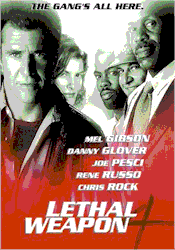
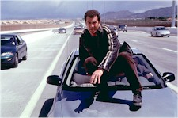
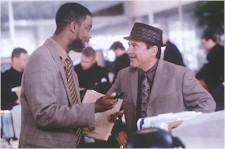
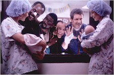

Contents | Features | Reviews | News | Archives | Store |
 |
|
| Movie Credits | Buy It! |
Lethal Weapon 4
Review by Eddie Cockrell
Posted 10 July 1998
|  | Directed by Richard Donner Starring
Mel Gibson, Danny Glover, Joe Pesci, Screenplay by Channing Gibson, |
"We're not too old for this shit!" scream exhausted cops Martin Riggs (Mel Gibson) and Roger Murtaugh (Danny Glover) midway through Lethal Weapon 4, and the self-conscious sentiment – the inverse of what Murtaugh's been saying since the first installment eleven years ago – strikes the precise note of comic macho bluster that has always set this franchise apart from other 1980s-era action extravaganzas.
Yet the shtick is showing definite signs of distraction and age, from the fiery but unexplained stunt that opens the movie through the scattershot story that in this film even more than the others seems nothing but a series of excuses for the ever-escalating mayhem. Apparently shot in a big hurry (at one point an extra looks directly in the camera before self-consciously glancing away), Lethal Weapon 4 alternates intricate stunt work with scenes that feel largely improvised, and the resulting mix represents the best and the worst of the series.
As the posters say, the gang's all here: the once suicidal but now just mischievously reckless Riggs (shorn of the trademark hair, finally relieved of the bogus cigarettes) and family man/reluctant hero Murtaugh have been promoted to captains (they can't be fired and the department can't find insurance for them), Leo Getz (Joe Pesci) is now a private detective but still the butt of their cruel jokes (until a truly weird coda elevates him to nearly celestial status), and Internal Affairs officer Lorna Cole (Rene Russo) is pregnant with Riggs' baby. But she's not the only one expecting, as the perpetually imperiled Rianne Murtaugh (Traci Wolfe) has been secretly seeing straight-arrow motormouth detective Lee Butters (Chris Rock) and is also about to deliver. Riggs knows this but Murtaugh doesn't, thinking instead that Butters' attempts to bond with him are actually pick-up lines (the movie suffers from this device, as Rock and Wolfe never have a scene together explaining – or even acknowledging – their relationship beyond some winking at each other in a crowd scene).
All of this prompts the usual bickering, which is interrupted by the inevitable bad-guy conflict that with everything else going on is nearly relegated to subplot status. Jet Li, he of the great Once Upon a Time in China action movie series (now there's a franchise), makes his American debut as Wah Sing Ku, the silent but deadly henchman for a group of Asian businessmen who import slave labor and run a counterfeiting ring on the side. This also gives Murtaugh – and the movie – the chance to exhibit a conscience, as the detective takes the slavery aspect of the criminal scheme very personally.
Proving the emphasis on character over action (an often unacknowledged asset of the series as a whole), the climactic showdown is brushed aside to get on with the real business of the endeavor, which seems to be procreating this singular species. One by one, the principals and supporting players (including Steve Kahan, who has played their boss, Captain Murphy, in all four films) come together in the local maternity ward to exhort the next generation of lethal weapons into the world and pose for an extended family snapshot that closes the film.
The guy who created the LWx characters, Shane Black, is the same Shane Black who was recently rejected for membership in the Academy of Motion Picture Arts and Sciences and suggesting that his work, which also includes Last Action Hero and The Long Kiss Goodnight, wasn't up to some sort of standard. This proves yet again that making popular, successful movies is a sword that cuts both ways. Knowing this, Donner and company have valiantly tried to keep the franchise interesting even while going for easily-digestible social causes and lowest-common-denominator yuks (hey, there's a reason they don't use roman numerals in the titles). For the record, sole credited screenwriter Channing Gibson created television's "Murder One," while one of the three writers credited with the story, Jonathan Lemkin, wrote that Al Pacino movie Devil's Advocate.
If the ending is mawkish – and it is – the sentiments are also completely justified. In front of and behind the camera, the Lethal Weapon movies exude a tangible camaraderie, from veteran director Richard Donner to the members of Murtaugh's on-screen family (some of whom don't even seem to work in film until one of these comes around). Of the new faces – most of which can be seen in a fascinating scrapbook sequence under the closing credits – Polish-born cinematographer Andrzej Bartkowiak (Prince of the City, Speed, Devil's Advocate) and Hong Kong action veteran Corey Yuen (aka Kwai Yuen) make the biggest immediate impact. The lensing is crisp and colorful, while the fight scenes and choreography of the final showdown between Riggs and Wah Sing Ku – frustratingly short by martial arts movie standards – is nevertheless one of the most palpably painful slugfests since the detective squared off against Gary Busey's sinister Mr. Joshua on Murtaugh's front lawn in the original. And Rock is a welcome addition to the adrenaline level (even though his comic riffs don't really have anything to do with the narrative), sharing the comic high point of the film with Pesci in a insanely profane diatribe against cellular phones. Only Russo seems shortchanged, as her two big sequences (other than a ruminative walk on the beach Riggs) involve asking audiences to believe that a woman about to deliver a baby can give and take a pretty good beating – but these movies have never shied away from explicit and brutal violence – and the actual simulated childbirth.
If nothing succeeds like excess, look for Lethal Weapon 4 to push the franchise into the next millennium (at least one opening day matinee crowd ate the high-octane hijinks up). Yet in a world where every other new movie tries for the same balance of naughty and nice, Donner, Gibson (who reportedly made $6 and $20 million for the show) and crew might want to keep in mind that everybody, eventually, gets too old for their shtick – if the shtick doesn't get too old for them first.
Remarkably consistent in tone and character development, the Lethal Weapon franchise has flourished with the twin virtues of outrageous action and complex characters. Here's a refresher course in Lethal lore:
Sax and Riggs and Murtaugh roll: Lethal Weapon (1987)
Once upon a time, there was a former Special Forces operative and martial arts expert named Martin Riggs who became a Los Angeles cop and went on a suicidal spree when his wife was killed in a mysterious automobile accident (shades of Mad Max). Paired with a conservative family man named Roger Murtaugh reluctant to stick his neck out but goaded into an escalating series of adventures by Riggs, the two men (first seen bearded and buck naked, respectively) form an unlikely bond when shady confederates from Riggs' past trash Murtaugh's house and kidnap his daughter Rianne (Traci Wolfe). Glover's gray hair comes and goes (he's always played the character far older than his real age – Rog actually calls Riggs a "smart kid" at one point) and the appeal of the self-consciously smarmy sax of David Sanborn, guitar of Eric Clapton and overblown orchestrations of Michael Kamen elude to this day, but the die is cast in this surprisingly substantial, character-driven piece. "There's no more heroes left in the world," someone says, in a movie that mints a new pair.
"We're back, we're bad, you're black and I'm mad": Lethal Weapon 2 (1989)
The best entry in the series to date succeeds largely on Marion Dougherty's brilliant casting of London-born Joss Ackland as the pop-eyed leader of a sinister group of South African diplomats ("who is the dickhead now, eh?") who launder money and sell drugs and Joe Pesci as motormouthed mob accountant Leo Getz ("they f*ck you at the drive-thru!" – a punchline reprised in LW4's cell phone bit), as well as the best stunts of the series (including a great car chase that features a tow truck and a surfboard and Riggs pulling a house down a mountain with a pickup).
Cheerfully admitting its own cartoonishness, the movie starts with the Looney Tunes theme, opens in the middle of a chase and has a disproportionate number of Three Stooges references. Individual character ticks include Murtaugh's "Go spit, Riggs" and neck twitch before shooting, and Riggs' double jointed shoulder and confusion over the "go on three" rule. Returning players in support include Mary Ellen Trainor, who has an ongoing role as perpetually astonished police psychiatrist Stephanie Woods. Patsy Kensit (the future Mrs. One-of-the-Gallaghers-from-Oasis) is Riggs' brief love interest.
"I'm chaos and he's mayhem; we're a double act.": Lethal Weapon 3 (1992)
Eight days from retirement, Murtaugh allows Riggs to drag him into an adventure involving rogue cop Jack Travis (Stuart Wilson) in the least satisfying film of the quartet. Sure, the movie introduces Rene Russo as "Infernal Repairs" (Internal Affairs) officer and karate expert Lorna Cole – who is given precious little to do in LW4 save simulating childbirth – but it can't seem to figure out what to do with Pesci's Leo Getz ("You think I could get a gun this time?"), who has transformed himself into a bottle blond real estate agent (!!!). By now Riggs even does his laundry at the Murtaugh's, reinforcing the family nature of the franchise. The socially conscious banter is often witty (pro-choice is good, Exxon is bad) and the climactic face off is suitably spectacular (even though the movie as a whole tries to be a bit less brutal – Riggs even shoots one miscreant in the leg on purpose), but LW3 proves that what happens when the delicate balance between character and chaos is allowed to lean towards the latter the results aren't always pretty – or logical.
Contents | Features | Reviews | News | Archives | Store
Copyright © 1999 by Nitrate Productions, Inc. All Rights Reserved.